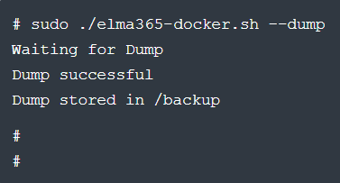
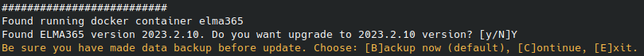
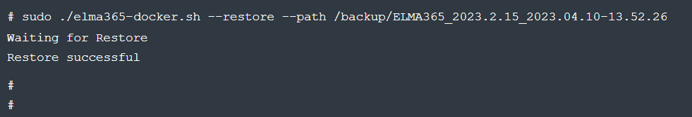

To increase flexibility and fault tolerance of the system, you can migrate data from databases inside the Kubernetes cluster to external storage. In BRIX Standard, this can be done with the elma365-docker.sh script.
The main steps of the migration process:
начало внимание
After moving databases to external storages, system reactivation is required.
конец внимание
Step 1: Create a data dump
- Stop the BRIX Standard application:
sudo ./elma365-docker.sh --stop
The application will become unavailable while a backup copy is created.
- To back up the databases, run the
elma365-docker.shinstallation script with the--dumpkey:
sudo ./elma365-docker.sh --dump
Example of running the installation script with the --dump key:

When the backup is complete, you will see a message stating that the dump was successful.
The dump will be saved to a separate backup folder. Its name specifies the system version and time stamp, for example, "/backup/ELMA365_2023.2.15_2023.04.10-13.52.26".
The path to save the dump is specified in the ELMA365_BACKUP_DIR parameter of the config-elma365.txt configuration file. For more details on how to specify a different path, see the Modify BRIX Standard parameters article.
- Start the BRIX Standard application:
sudo ./elma365-docker.sh --start
Step 2: Update BRIX application parameters
- In the
config-elma365.txtconfiguration file, enter the parameters for connecting to external databases. - To save the changed parameters of the BRIX Standard (KinD) application, upgrade the application using the
elma365-docker.shinstallation script — run it with the--upgradekey. This can be done in one of the following ways:
- Via the Internet connection:
sudo ./elma365-docker.sh --upgrade
- Without the Internet connection:
sudo ./elma365-docker.sh --offline --upgrade
After running the installation script, the installed version number of BRIX Standard (KinD) will be detected and you will be asked to upgrade to a new version.
As you apply the new parameters, the BRIX Standard (KinD) versions will match. Example:

- Confirm the upgrade by typing
[Y]. Specifying any other character will interrupt the application upgrade. - Wait until the application upgrade is complete. You will see the message: Upgrade BRIX application successful.
Step 3: Restore BRIX Standard (KinD) data
Restore data from backups on external databases.
- Stop the BRIX Standard application:
sudo ./elma365-docker.sh --stop
- If the external PostgreSQL and MongoDB databases were previously used, prepare them for restoration by following the steps below:
- Recreate the databases using the drop command. Read more about it in the PostgreSQL and MongoDB articles.
- Configure the databases according to the parameters specified in the Prepare external databases section.
- Run data restoration using the command with the
--restoreand--path /backup/<backup-folder-name>keys:
sudo ./elma365-docker.sh --restore --path /backup/<backup-folder-name>
Important: to restore data, the backup must be placed in the folder that is specified in the configuration file. Restoration is not supported if the data is stored in a subfolder, such as /backup/brix/<backup-folder-name>.
Example of installation script execution:

When you finish restoring data from the backup, you will see a message stating that the restoration was successful.
- Start the BRIX Standard application:
sudo ./elma365-docker.sh--start
Found a typo? Select it and press Ctrl+Enter to send us feedback